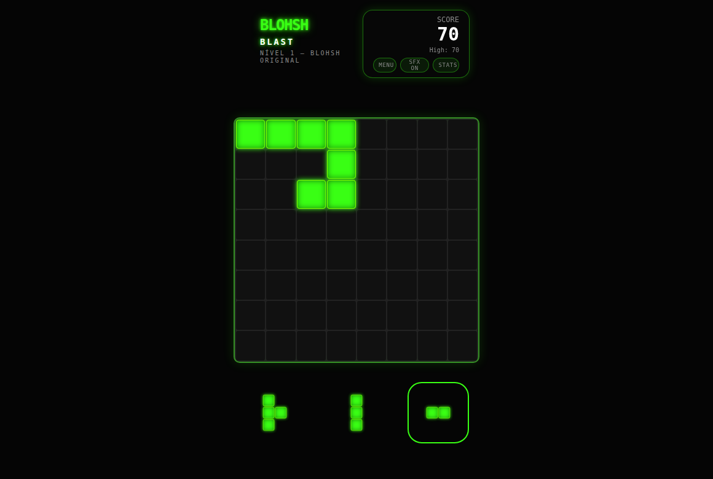

Não é um catálogo de repositórios. São três histórias de engenharia: contextos reais, decisões técnicas, limitações documentadas e trabalho em evolução.
Um puzzle de blocos responsivo que evoluiu de uma mecânica básica para uma experiência com modos de jogo, progressão, missões e instalação como PWA.

Registro do projeto em funcionamento. Captura produzida do código-fonte com três colocações reais por teclado; não é uma imagem conceitual ou uma demonstração hospedada.
O desafio
Criar um jogo simples de entender, mas com interações confiáveis em mouse e toque, regras consistentes e progressão que incentivasse novas partidas.
O que foi construído
Tabuleiro 8×8, arrastar e soltar, recordes locais, modos Classic/Zen/Hardcore/Daily, XP, skins, missões e cache offline do aplicativo.
Decisões e limites
HTML, CSS e JavaScript para execução leve. Preferências e leaderboard são locais no navegador; ainda não existe ranking sincronizado entre jogadores.
Um kit comunitário de lançamento e diagnóstico para o AppImage da Salinha em sistemas Linux com KDE Plasma, Wayland e XWayland.
01 / AMBIENTEWayland / KDEIdentificar a sessão gráfica
02 / BACKENDXWaylandSelecionar X11 quando suportado
03 / MONTAGEMFallback FUSEExtrair AppImage temporariamente quando necessário
04 / EVIDÊNCIADNS / HTTPSGerar logs para separar hipóteses
Diagrama técnico derivado do código e da documentação. A causa da falha do serviço de rede não foi determinada de forma conclusiva.
O problema
Mensagens de incompatibilidade entre Wayland e Vulkan, dificuldades com FUSE e falhas observadas no serviço de rede do Chromium dificultavam entender por que o app não iniciava.
A abordagem
Scripts Bash para registrar logs, ajustar a seleção do backend gráfico, testar DNS/HTTPS e usar extração temporária do AppImage quando a montagem por FUSE falha.
Resultados e limites
O fluxo de inicialização e os caminhos de diagnóstico foram documentados. A resolução completa do problema do serviço de rede não foi confirmada em ambiente real.
Projeto de um player de áudio nativo para Linux. O objetivo é desenvolver uma aplicação local-first, separando interface, reprodução, dados e persistência.
A motivação
Explorar arquitetura de aplicações desktop Linux com Rust e boas práticas de manutenção desde o início do ciclo de desenvolvimento.
Estágio atual
Repositório com bootstrap mínimo, CI, formatação, Clippy, testes e auditoria de dependências. A interface GTK e o motor de reprodução ainda não foram implementados.
Próximo marco
Construir uma janela funcional em GTK/Libadwaita, integrar reprodução de mídia local e adicionar persistência. Nada disso é apresentado aqui como concluído.